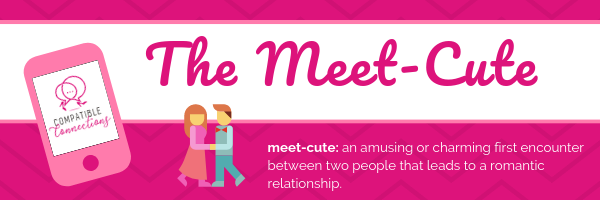

The Slow Fade: What It Means & How To Avoid It
So you had that first or even second date, but he’s gone cold on you? That’s the “slow fade.”
At this point you’re probably wondering, “What’s next? What can I do?”
Open, honest communication is important in a healthy relationship. In established relationships, we’re able to tell our partners when we’re triggered and what we’re feeling or thinking, but in new relationships this kind of unforced honesty takes time to develop. Women who try too hard to hurry things along, or who aggressively (and persistently) ask their new partner to share their thoughts and feelings, run the risk of exhausting or alienating their partner and ending a promising relationship before it’s even had a chance to begin!
Patience is a virtue well worth practicing when it comes to getting to know men better. Thankfully, though, men are not usually very complicated. In fact, with a little training, most women can easily learn to “think like a man.” For example, every man, no matter what his age, has his own Girl Positioning System (“GPS”) which he uses to determine how he’ll engage with you. As his interest grows, he’ll seek out or create more opportunities to be close to you. Conversely, as his interest cools his GPS will start steering him away from you as he initiates a “slow fade.”
" Men who use the slow fade are essentially dodging the truth in an effort not to hurt you. Well, that’s probably a bit too kind: men who use this tactic simply don’t have the courage to step up and tell you how they really feel. "
Men who use the slow fade are essentially dodging the truth in an effort not to hurt you. Well, that’s probably a bit too kind: men who use this tactic simply don’t have the courage to step up and tell you how they really feel.
And that’s a huge disservice to a single woman like you, especially now that text messages and emails make it easy for a guy to gracefully detach after a date or two. In situations like this, hurt feelings are normal and totally justified, and while you may be tempted to call, text, or email a slow fader for honest answers that’s almost always a bad idea. The real truth here is that a man who’s not mature enough to tell you he doesn’t want to see you anymore is also a man who’s not mature enough to tell you why.
It’s unfortunate, but the only sure-fire way to avoid being on the receiving end of a slow fade is to get better at picking compatible men before you meet them face-to-face. Even then there are no guarantees, so remember: when you do experience the slow fade, don’t take it personally, don’t seek information, and don’t worry about what (if anything) you did wrong. It’s not about you; you’re just not compatible.
Move on quickly. You probably just dodged a bullet!
Wishing You All The Best in Life & Love,
Bernadette Smith, MCC
Bernadette Smith, MCC, is a certified dating & relationship expert with over a decade’s worth of experience. She is the founder of Compatible Connections, a boutique coaching firm that specializes in helping divorced women become confident, conscious daters.
Upcoming Events
All of our upcoming events are currently on hold due to the COVID-19 pandemic.
Follow Us On Facebook!
We post Inspirational Graphics every Monday and Dating Tips every Friday.
Subscribe to The Meet-Cute!
The Meet-Cute is Compatible Connections’ way of saying “thank you” to all the fabulous singles who make our work possible.
Whenever we can, we share a heartfelt e-mail with our subscribers, chocked full of fun, light, flirty, and informative content.
You can read our current issue here, peruse back issues here and subscribe here.
All new subscribers receive two free gifts - 8 Things Online Dating Sites Don't Want You To Know and a Partner With Yourself First Personal Inventory - when they sign up to receive new issues.
Let's Connect!
If you have any questions about this post, we’d love to hear from you!
Click here to e-mail Coach Bernadette at bernadette at compatibleconnections dot biz.